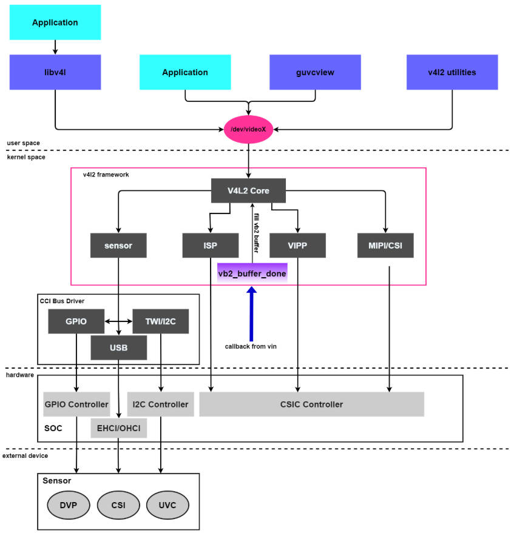
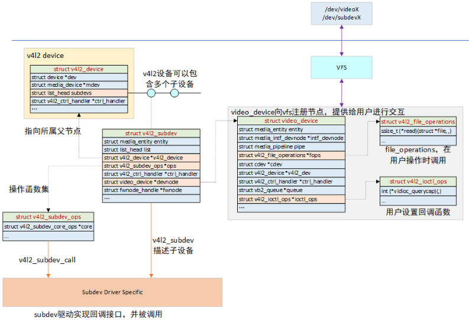

一、V4L2 架构
V4L2 子系统是 Linux 内核中关于 Video（视频）设备的API接口，是 V4L（Video for Linux）子系统的升级版本。
V4L（Video for Linux）是 Linux 内核中关于视频设备的 API 接口,出现于 Linux 内核 2.1 版本，经过修改 bug 和添加功能，Linux 内核 2.5 版本推出了 V4L2（Video for Linux Two）子系统，功能更多且更稳定。
V4L2 子系统向上为虚拟文件系统提供了统一的接口，应用程序可通过虚拟文件系统访问 Video 设备。
V4L2 子系统向下给 Video 设备提供接口，同时管理所有 Video 设备。

user space： libv4l 库来操作摄像头/dev/videoX 自己编写应用程序kernel space： hardware external device
二、V4L2 下的设备
Video设备又分为主设备和从设备对于Camera来说，
**主设备：**Camera Host 控制器为主设备，负责图像数据的接收和传输，
**从设备：**从设备为 Camera Sensor，一般为 I2C 接口，可通过从设备控制 Camera 采集图像的行为，如图像的大小、图像的 FPS 等。
V4L2的主设备号是 81，次设备号范围 0~255，这些次设备号又分为多类设备：
Video 设备（次设备号范围 0-63）
Radio（收音机）设备（次设备号范围 64-127）
Teletext 设备（次设备号范围 192-223）
VBI 设备（次设备号范围 224-255）。
V4L2 设备对应的设备节点有 /dev/videoX、/dev/vbiX、/dev/radioX 。
下面就以 video 设备为例来看一下：
1 2 3 4 $ ls /dev/video*
再看下有系统哪些 v4l2 设备节点：
1 2 3 4 5 6 7 8 9 10 11 12 13 14 15 16 17 18 19 20 21 22 $ v4l2-ctl --list-devices
物理标识：usb-fc800000.usb-1.1，说明它挂在 fc800000.usb 这个 USB 控制器的 1.1 端口上。这是它在 USB 总线上的物理位置
节点归属：UVC 摄像头一般有两个节点，一个用于视频流，一个用于数据流。这里使用的是 video20 和 video21
额外信息：还多了一个 /dev/media2。这说明该 UVC 驱动注册了 Media Controller 设备，video20、video21 和 media2 共同构成一个 media graph
下面再看下哪个是视频流节点，哪个是数据流节点：
1 2 3 4 5 6 7 8 9 10 11 12 13 14 $ sudo v4l2-ctl -d /dev/video20 --all | grep "Device Caps" -A 5$ sudo v4l2-ctl -d /dev/video21 --all | grep "Device Caps" -A 5
可以看出 video20 就是采集画面用的视频流节点，而 video21 就是采集数据用的元数据节点。
另外，通过如下命令还可以查看摄像头支持的格式与分辨率：
1 2 3 4 5 6 7 8 9 10 11 12 13 14 15 16 17 18 19 20 21 22 23 24 25 26 27 28 29 30 31 32 33 34 35 36 37 38 39 40 41 42 43 44 45 $ sudo v4l2-ctl -d /dev/video20 --list-formats-ext
像素格式用 4 个字符表示，叫 fourcc：
fourcc
含义
每像素字节
YUYVYUV 4:2:2 打包
2
MJPGMotion-JPEG 压缩
不固定
NV12YUV 4:2:0 半平面
1.5
三、V4L2 驱动程序代码
Linux 系统中视频输入设备主要包括以下四个部分：
字符设备驱动：
V4L2 驱动核心：
平台 V4L2 设备驱动：video_device 和v4l2_device；
具体的 sensor 驱动：v4l2_subdev。
V4L2 核心源码位于 drivers/media/v4l2-core，根据功能可以划分为四类：
字符设备模块：v4l2-dev.c 实现，主要作用申请字符主设备号、注册 class 和提供 video device 注册注销等相关函数。
V4L2 基础框架：v4l2-device.c、v4l2-subdev.c、v4l2-fh.c、v4l2-ctrls.c 等文件构建 V4L2 基础框架。
videobuf 管理videobuf2-core.c、videobuf2-dma-contig.c、videobuf2-dma-sg.c、videobuf2-memops.c、videobuf2-vmalloc.c、v4l2-mem2mem.c 等文件实现，完成 videobuffer 的分配、管理和注销。
ioctl 框架：v4l2-ioctl.c 文件实现，构建 V4L2 ioctl 的框架。
应用层通过 ioctl 发送控制命令（如“开启视频流”“设置对比度”），其调用流程是V4L2框架的核心逻辑，具体分为4步：
用户空间发起请求 /dev/videoX 节点调用 ioctl，传入命令码（如 VIDIOC_STREAMON 表示开启流）：
1 2 3 4 int fd = open("/dev/video20" , O_RDWR);enum v4l2_buf_type type =
内核层接收请求 video_device 的 fops 成员（v4l2_file_operations）找到 unlocked_ioctl 函数（通常为V4L2核心层的 video_ioctl2），将请求转发给该函数。
核心层解析命令并匹配子设备 video_ioctl2 函数根据命令码，从 video_device 的 ioctl_ops 中找到对应的处理函数，同时遍历 v4l2_device 的 subdevs 链表，找到需要控制的 v4l2_subdev（如控制 Sensor 则找 Sensor 子设备）。
驱动层执行硬件控制 v4l2_subdev 的 v4l2_subdev_ops 中的对应函数（如 s_stream 开启视频流），最终通过硬件接口（如 I2C）控制硬件完成操作。
四、结构体

4.1 v4l2_device 主设备
V4L2 主设备实例使用 struct v4l2_device 结构体表示，v4l2_device 是 V4L2 子系统的入口，管理着 V4L2 子系统的主设备和从设备；
v4l2_device 用来描述一个 v4l2 设备实例，可以包含多个子设备，对应的是例如 I2C、CSI、MIPI 等设备，它们是从属于一个 V4L2 device 之下的；
简单设备可以仅分配这个结构体，但在大多数情况下，都会将这个结构体嵌入到一个更大的结构体中以提供v4l2框架的功能，比如 struct isp_device ；
需要与媒体框架整合的驱动必须手动设置 dev->driver_data，指向包含 v4l2_device 结构体实例的驱动特定设备结构体。这可以在注册 V4L2 设备实例前通过 dev_set_drvdata() 函数完成。
同时必须设置 v4l2_device 结构体的 mdev 域，指向适当的初始化并注册过的 media_device 实例。
1 2 3 4 5 6 7 8 9 10 11 12 13 14 15 16 17 18 19 20 21 22 23 24 25 26 27 28 struct v4l2_device {struct device *dev ;#if defined(CONFIG_MEDIA_CONTROLLER) struct media_device *mdev ;#endif struct list_head subdevs ;spinlock_t lock;char name[V4L2_DEVICE_NAME_SIZE];void (*notify)(struct v4l2_subdev *sd, unsigned int notification, void *arg);struct v4l2_ctrl_handler *ctrl_handler ;struct v4l2_prio_state prio ;struct mutex ioctl_lock ;struct kref ref ;void (*release)(struct v4l2_device *v4l2_dev);
注册函数：
使用 v4l2_device_register 注册 v4l2_device 结构体。如果 v4l2_dev->name 为空，则它将被设置为从 dev 中衍生出的值（为了更加精确，形式为驱动名后跟 bus_id）。
1 2 3 if (!v4l2_dev->name[0 ])snprintf (v4l2_dev->name, sizeof (v4l2_dev->name), "%s %s" ,
如果在调用 v4l2_device_register 前已经设置好了，则不会被修改。如果 dev 为 NULL，则必须在调用v4l2_device_register 前设置 v4l2_dev->name。可以基于驱动名和驱动的全局 atomic_t 类型的实例编号，通过 v4l2_device_set_name() 设置 name。
这样会生成类似 ivtv0、ivtv1 等名字。若驱动名以数字结尾，则会在编号和驱动名间插入一个破折号，如：cx18-0、cx18-1等。
dev 参数通常是一个指向 pci_dev、usb_interface 或 platform_device 的指针，很少使其为 NULL，除非是一个 ISA 设备或者当一个设备创建了多个 PCI 设备，使得 v4l2_dev 无法与一个特定的父设备关联。
使用 v4l2_device_unregister 卸载 v4l2_device 结构体。如果 dev->driver_data 域指向 v4l2_dev，将会被重置为 NULL。主设备注销的同时也会自动注销所有子设备。如果你有一个热插拔设备（如 USB 设备），则当断开发生时，父设备将无效。
由于 v4l2_device 有一个指向父设备的指针必须被清除，同时标志父设备已消失，所以必须调用v4l2_device_disconnect 函数清理 v4l2_device 中指向父设备的 dev 指针。v4l2_device_disconnect 并不注销主设备，因此依然要调用 v4l2_device_unregister 函数注销主设备。
1 2 3 4 5 6 7 8 9 10 11 12 13 14 15 16 17 18 19 20 21 22 23 24 25 26 27 28 29 30 31 32 33 34 35 36 37 38 39 40 41 42 43 44 45 46 47 48 [include/media/v4l2-device.h]int v4l2_device_register (struct device *dev, struct v4l2_device *v4l2_dev) void v4l2_device_unregister (struct v4l2_device *v4l2_dev) int v4l2_device_set_name (struct v4l2_device *v4l2_dev, const char *basename, atomic_t *instance) void v4l2_device_disconnect (struct v4l2_device *v4l2_dev) ;static int callback (struct device *dev, void *p) struct v4l2_device *v4l2_dev =if (v4l2_dev == NULL )return 0 ;return 0 ;int iterate (void *p) struct device_driver *drv ;int err;"ivtv" , &pci_bus_type);NULL , p, callback);return err;
4.2 video_device
V4L2 子系统使用 v4l2_device 结构体管理设备，设备的具体操作方法根据设备类型决定，
前面说过管理的设备分为很多种，若是视频设备，则需要注册 video_device 结构体 ，并提供相应的操作方法。
对于视频设备 Camera 而言，Camera 控制器可以视为主设备 ，接在 Camera 控制器上的摄像头可以视为从设备 。
用户态看到的：
对应内核里的：
1 2 3 4 5 6 7 8 9 10 11 12 struct video_device { const struct v4l2_file_operations *fops ;struct cdev *cdev ;struct v4l2_device *v4l2_dev ;struct v4l2_ctrl_handler *ctrl_handler ;struct vb2_queue *queue ;const struct v4l2_ioctl_ops *ioctl_ops ;
注册函数：
1 2 3 4 5 6 7 8 9 10 11 12 13 14 15 16 17 18 19 20 21 22 23 24 25 26 27 28 29 30 31 32 33 34 35 36 37 38 39 40 41 42 43 44 45 46 47 48 49 50 51 52 53 54 55 56 57 58 59 60 61 62 63 64 65 66 67 68 69 70 71 72 73 74 75 76 77 78 79 80 81 82 83 84 85 86 87 88 89 90 91 92 93 94 95 96 97 98 99 100 101 102 103 104 105 106 107 108 109 [kernel\drivers\media\v4l2-core\v4l2-dev.c]static inline int __must_check video_register_device (struct video_device *vdev, int type, int nr) return __video_register_device(vdev, type, nr, 1 , vdev->fops->owner);int __video_register_device(struct video_device *vdev, int type, int nr,int warn_if_nr_in_use, struct module *owner)int minor_cnt = VIDEO_NUM_DEVICES;const char *name_base;-1 ;if (WARN_ON(!vdev->release))return -EINVAL;if (WARN_ON(!vdev->v4l2_dev))return -EINVAL;switch (type) {case VFL_TYPE_GRABBER:"video" ;NULL ;if (vdev->dev_parent == NULL )if (vdev->ctrl_handler == NULL )-1 ? 0 : nr, minor_cnt);if (nr == minor_cnt)0 , minor_cnt);if (nr == minor_cnt) {"could not get a free device node number\n" );return -ENFILE;#ifdef CONFIG_VIDEO_FIXED_MINOR_RANGES #else for (i = 0 ; i < VIDEO_NUM_DEVICES; i++)if (video_device[i] == NULL )break ;if (i == VIDEO_NUM_DEVICES) {"could not get a free minor\n" );return -ENFILE;#endif if (vdev->ioctl_ops)if (vdev->cdev == NULL ) {goto cleanup;1 );"%s%d" , name_base, vdev->num);
这个函数主要做四件事：
检查设备类型，赋予设备名称
寻找一个空闲的设备位置，寻找合适的主设备号和次设号
初始化字符设备，使用 v4l2_device 的 v4l2_fops 初始化 video_device 的 fops、release 函数等
注册字符设备，并生成 /dev/videoX 结点，注册 subdev 时也会调用这个接口
分配和注册：
1 2 3 4 5 6 7 8 9 10 11 12 13 14 15 struct video_device *vdev ;if (!vdev)return -ENOMEM;queue = &dev->queue ;-1 );
注销：
1 video_unregister_device(vdev);
这就是 /dev/videoN 的来源。
4.3 v4l2_subdev 从设备
V4L2 从设备使用 struct v4l2_subdev 结构体表示，该结构体用于对子设备进行抽象。
几乎所有的设备都有多个 IC 模块
它们可能是实体的（例如 USB 摄像头里面包含 ISP、sensor 等）
也可能是抽象的（如 USB 设备里面的抽象拓扑结构）
它们在 /dev 目录下面生成了多个设备节点，并且这些 IC 模块还创建了一些非 v4l2 设备：DVB、ALSA、FB、I2C 和输入设备。
通常情况下，这些 IC 模块通过一个或者多个 I2C 总线连接到主桥驱动上面，同时其它的总线仍然可用，这些 IC 就称为 sub-devices 。
一个 V4L2 主设备可能对应多个 V4L2 从设备，所有主设备对应的从设备都挂到 v4l2_device 结构体的 subdevs 链表中。
对于视频设备，从设备就是摄像头，通常情况下是 I2C 设备，主设备可通过 I2C 总线控制从设备
例如控制摄像头的焦距、闪光灯等，同时使用 MIPI 或者 LVDS 等接口进行图像数据传输。
struct v4l2_subdev 中包含的 struct v4l2_subdev_ops 是一个完备的操作函数集，用于对接各种不同的子设备，比如 video、audio、sensor 等；
同时还有一个核心的函数集 struct v4l2_subdev_core_ops，提供更通用的功能。子设备驱动根据设备特点实现该函数集中的某些函数即可。
1 2 3 4 5 6 7 8 9 10 11 12 13 14 15 16 17 18 19 20 21 22 23 24 25 26 27 28 29 30 31 32 33 34 35 36 37 38 39 40 41 42 43 44 45 46 47 48 49 50 51 52 53 54 55 56 [include/media/v4l2-subdev.h]#define V4L2_SUBDEV_FL_IS_I2C (1U << 0) #define V4L2_SUBDEV_FL_IS_SPI (1U << 1) #define V4L2_SUBDEV_FL_HAS_DEVNODE (1U << 2) #define V4L2_SUBDEV_FL_HAS_EVENTS (1U << 3) struct v4l2_subdev {#if defined(CONFIG_MEDIA_CONTROLLER) struct media_entity entity ;#endif struct list_head list ;struct module *owner ;bool owner_v4l2_dev;struct v4l2_device *v4l2_dev ;const struct v4l2_subdev_ops *ops ;const struct v4l2_subdev_internal_ops *internal_ops ;struct v4l2_ctrl_handler *ctrl_handler ;char name[V4L2_SUBDEV_NAME_SIZE];void *dev_priv;void *host_priv;struct video_device *devnode ;struct device *dev ;struct list_head async_list ;struct v4l2_async_subdev *asd ;struct v4l2_async_notifier *notifier ;struct v4l2_subdev_platform_data *pdata ;struct v4l2_subdev_internal_ops {int (*registered)(struct v4l2_subdev *sd);void (*unregistered)(struct v4l2_subdev *sd);int (*open)(struct v4l2_subdev *sd, struct v4l2_subdev_fh *fh);int (*close)(struct v4l2_subdev *sd, struct v4l2_subdev_fh *fh);
使用 v4l2_subdev_init 初始化 v4l2_subdev 结构体。然后必须用一个唯一的名字初始化 subdev->name，同时初始化模块的 owner 域。
若从设备是 I2C 设备，则可使用 v4l2_i2c_subdev_init 函数进行初始化，该函数内部会调用 v4l2_subdev_init，同时设置 flags、owner、dev、name 等成员。
1 2 3 4 5 6 7 8 9 10 11 12 13 14 [include/media/v4l2-subdev.h]void v4l2_subdev_init (struct v4l2_subdev *sd, const struct v4l2_subdev_ops *ops) ;void v4l2_i2c_subdev_init (struct v4l2_subdev *sd, struct i2c_client *client, const struct v4l2_subdev_ops *ops) ;
从设备必须向 V4L2 子系统注册 v4l2_subdev 结构体，使用 v4l2_device_register_subdev 注册，使用 v4l2_device_unregister_subdev 注销。
1 2 3 4 5 6 7 8 9 10 11 [include/media/v4l2-device.h]int v4l2_device_register_subdev (struct v4l2_device *v4l2_dev, struct v4l2_subdev *sd) void v4l2_device_unregister_subdev (struct v4l2_subdev *sd) ;
V4L2 从设备驱动都必须有一个 v4l2_subdev 结构体。
这个结构体可以单独代表一个简单的从设备，也可以嵌入到一个更大的结构体中，与更多设备状态信息保存在一起。通常有一个下级设备结构体（比如：i2c_client）包含了内核创建的设备数据。
建议使用 v4l2_set_subdevdata() 将这个结构体的指针保存在 v4l2_subdev 的私有数据域(dev_priv)中。可以更方便的通过 v4l2_subdev 找到实际的低层总线特定设备数据。
对于常用的 i2c_client 结构体，i2c_set_clientdata 函数可用于保存一个 v4l2_subdev 指针，i2c_get_clientdata 可以获取一个 v4l2_subdev 指针；对于其他总线可能需要使用其他相关函数。
1 2 3 4 5 6 7 8 9 10 11 12 13 14 15 16 17 18 19 [include/media/v4l2-subdev.h]static inline void v4l2_set_subdevdata (struct v4l2_subdev *sd, void *p) static inline void i2c_set_clientdata (struct i2c_client *dev, void *data) static inline void *i2c_get_clientdata (const struct i2c_client *dev) return dev_get_drvdata(&dev->dev);
主设备驱动中也应保存每个子设备的私有数据，比如一个指向特定主设备的各设备私有数据的指针。为此 v4l2_subdev 结构体提供主设备私有数据域(host_priv)，并可通过 v4l2_get_subdev_hostdata 和 v4l2_set_subdev_hostdata 访问。
1 2 3 4 5 6 7 8 9 10 [include/media/v4l2-subdev.h]static inline void *v4l2_get_subdev_hostdata (const struct v4l2_subdev *sd) return sd->host_priv;static inline void v4l2_set_subdev_hostdata (struct v4l2_subdev *sd, void *p)
每个 v4l2_subdev 都包含子设备驱动需要实现的函数指针（如果对此设备不适用，可为 NULL），具体在 v4l2_subdev_ops 结构体当中。
由于子设备可完成许多不同的工作，而在一个庞大的函数指针结构体中通常仅有少数有用的函数实现其功能肯定不合适。
所以，函数指针根据其实现的功能被分类，每一类都有自己的函数指针结构体，如 v4l2_subdev_core_ops、v4l2_subdev_audio_ops、v4l2_subdev_video_ops 等等。
顶层函数指针结构体包含了指向各类函数指针结构体的指针，如果子设备驱动不支持该类函数中的任何一个功能，则指向该类结构体的指针为 NULL。
1 2 3 4 5 6 7 8 9 10 11 12 13 14 15 16 17 18 19 20 21 22 23 24 25 26 27 28 29 30 31 32 33 34 35 36 37 38 39 [include/media/v4l2-subdev.h]struct v4l2_subdev_ops {const struct v4l2_subdev_core_ops *core ;const struct v4l2_subdev_tuner_ops *tuner ;const struct v4l2_subdev_audio_ops *audio ;const struct v4l2_subdev_video_ops *video ;const struct v4l2_subdev_vbi_ops *vbi ;const struct v4l2_subdev_ir_ops *ir ;const struct v4l2_subdev_sensor_ops *sensor ;const struct v4l2_subdev_pad_ops *pad ;struct v4l2_subdev_core_ops {int (*s_io_pin_config)(struct v4l2_subdev *sd, size_t n,struct v4l2_subdev_io_pin_config *pincfg);int (*init)(struct v4l2_subdev *sd, u32 val);int (*load_fw)(struct v4l2_subdev *sd);int (*reset)(struct v4l2_subdev *sd, u32 val);int (*s_gpio)(struct v4l2_subdev *sd, u32 val);int (*s_power)(struct v4l2_subdev *sd, int on);int (*interrupt_service_routine)(struct v4l2_subdev *sd,bool *handled);
使用 v4l2_device_register_subdev 注册从设备后，就可以调用 v4l2_subdev_ops 中的方法了。
可以通过 v4l2_subdev 直接调用，也可以使用内核提供的宏定义 v4l2_subdev_call 间接调用某一个方法。
若要调用多个从设备的同一个方法，则可使用 v4l2_device_call_all 宏定义。
1 2 3 4 5 6 7 8 9 10 11 12 13 14 15 16 17 18 19 20 21 22 23 24 #define v4l2_subdev_call(sd, o, f, args...) \ (!(sd) ? -ENODEV : (((sd)->ops->o && (sd)->ops->o->f) ? \ (sd)->ops->o->f((sd) , ##args) : -ENOIOCTLCMD)) 0 , video, g_std, &norm);#define v4l2_device_call_all(v4l2_dev, grpid, o, f, args...) \ do { \ struct v4l2_subdev *__sd; \ __v4l2_device_call_subdevs_p(v4l2_dev, __sd, \ !(grpid) || __sd->grp_id == (grpid), o, f , \ ##args); \ } while (0)
如果子设备需要通知它的 v4l2_device 主设备一个事件，可以调用 `v4l2_subdev_notify(sd,notification, arg)``。
这个宏检查是否有一个 notify 回调被注册，如果没有，返回 -ENODEV。否则返回 notify 调用结果。notify 回调函数由主设备提供。
1 2 3 4 5 6 7 8 [include/media/v4l2-device.h]static inline void v4l2_subdev_notify (struct v4l2_subdev *sd, unsigned int notification, void *arg) if (sd && sd->v4l2_dev && sd->v4l2_dev->notify)
使用 v4l2_subdev 的好处在于它是一个通用结构体，且不包含任何底层硬件信息。
所有驱动可以包含多个 I2C 总线的从设备，但也有从设备是通过 GPIO 控制。这个区别仅在配置设备时有关系，一旦子设备注册完成，对于 v4l2 子系统来说就完全透明了。